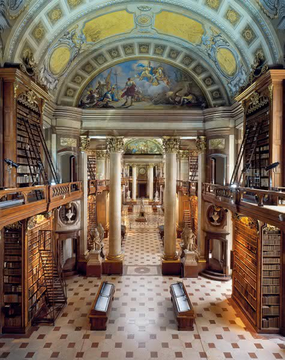

Biblioteca Națională a Austriei (Österreichische Nationalbibliothek)
Biblioteca Națională a Austriei își are sediul în Viena. Este una din cele mai mari biblioteci din Austria. Este amplasată în centrul Vienei, în Palatul Hofburg, care a fost între anii 1438-1583 și 1612-1806 reședința regală sau imperială austriacă, azi fiind reședința președintelui Austriei. Până la sfârșitul Primului Război Mondial a purtat denumirea Wiener Hofbibliothek, fiind una dintre cele mai bogate biblioteci din lume. Biblioteca cuprinde printre altele culegeri de manuscrise, diferite documente istorice, lucrări de diplomă, de doctorat, care din anul 2000 sunt puse la dispoziția cititorilor în internet prin Anno (Austrian Newspapers Online).
Casa Fluturilor (Schmetterlinghaus)
Dacă te afli în apropiere de Palatul Hofburg ai ocazia să vizitezi și Casa Imperială a Fluturilor, un paradis exotic cu vegetație luxuriantă în care fluturii zboară pe lângă tine prietenoși așteptând parcă să îi fotografiezi.Fluturii zboară nestingheriți pe lângă tine și trebuie să fii foarte atent ca să nu îi atingi sau să nu îți intre în ochi. Mai greu a fost să îi prindem la fotografiat deoarece cu greu îi poți distinge prin vegetație, iar dacă sunt aproape de tine este foarte aglomerat pentru a-i surprinde. Uneori îi mai poți surprinde la farfuriile cu felii de portocală și banană puse pentru a-i atrage.
Pe partea stângă se află chiar o mică peșteră și minicascadă a cărei apă curge peste peștișori de toate culorile.
Fluturii sunt aduși din Costa Rica, Philippine sau Thailanda, coloritul lor fiind aparte, de la nuanțe de portocaliu și galben până la nuanțe de albastru și roșu.